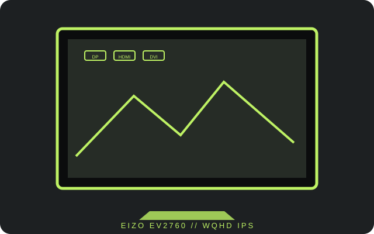

[ INDIVIDUAL COMPONENT // DISPLAYS ]
EIZO FlexScan EV2760
A 27-inch WQHD IPS office monitor with DisplayPort, HDMI, DVI-D and USB hub.

IDENTIFICATION: Confirm EV2760 from the rear label. Its WQHD resolution and three input families are specific to this model.
Specifications
| Catalog subcategory | LCD displays |
|---|---|
| Exact product | EIZO FlexScan EV2760 |
| Panel and native resolution | 27-inch IPS LCD, 2560 × 1440 (16:9) |
| Native refresh | 60 Hz at native resolution |
| Luminance / contrast | 350 cd/m² typical; 1000:1 typical |
| Inputs / companion ports | DisplayPort 1.2, HDMI, DVI-D, USB-A hub and audio output |
| Stand / VESA | Height, tilt, swivel and pivot adjustment; 100 × 100 mm VESA mounting |
| Power / compatibility | Built-in 100–240 V AC, 50/60 Hz supply; typical power consumption is about 16 W. Digital inputs support PC connections; select a supported 2560 × 1440 / 60 Hz timing and use an appropriate cable or active adapter where required. |
Preservation notes
Maintain the correct input and cable inventory, especially when connecting legacy DVI-D hosts. Record the panel condition, selected resolution, brightness and any adapter in the signal path.
Manufacturer documentation and sources
- EIZO — FlexScan EV2760 product informationManufacturer product features and published specifications.
- EIZO Support — EV2760 user manuals and downloadsModel-specific setup and documentation from the manufacturer.